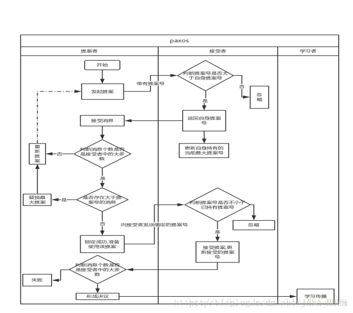

Paxos算法¶
Note
There is only one consensus protocol, and that’s “Paxos” — all other approaches are just broken versions of Paxos.世界上只有一种共识协议，就是 Paxos，其他所有共识算法都是 Paxos 的退化版本。—— Mike Burrows，Inventor of Google Chubby
Paxos 算法将分布式系统中的节点分为三类节点:
提案节点: Proposer
决策节点: Acceptor
记录节点: Learner
Note
Paxos 是典型的基于 操作转移模型 而非 状态转移模型 来设计的算法，所以这里的 “设置值” 不要类比成程序中变量的赋值操作，而应该类比成日志记录操作。因此，我在后面介绍 Raft 算法时，就索性直接把 “提案” 叫做 “日志” 了。
两个因素的共同影响:
系统内部各个节点间的通讯是不可靠的。
它们发出、收到的信息可能延迟送达、也可能会丢失，但不去考虑消息有传递错误的情况。
系统外部各个用户访问是可并发的。
如果请求对系统进行串行访问，那单纯地应用 Quorum 机制，少数节点服从多数节点，就已经足以保证值被正确地读写了。
Paxos 算法是怎么解决并发操作带来的竞争的:
Paxos 算法包括 “准备（Prepare）” 和 “批准（Accept）” 两个阶段。
“准备”（Prepare）就相当于抢占锁的过程:
如果某个提案节点准备发起提案，必须先向所有的决策节点广播一个许可申请（称为 Prepare 请求）。 提案节点的 Prepare 请求中会附带一个全局唯一的数字 n 作为提案 ID，决策节点收到后，会给提案节点两个承诺和一个应答。 两个承诺是指: 承诺不会再接受提案 ID 小于或等于 n 的 Prepare 请求； 承诺不会再接受提案 ID 小于 n 的 Accept 请求。 一个应答是指: 在不违背以前作出的承诺的前提下，回复已经批准过的提案中 ID 最大的那个提案所设定的值和提案 ID 如果该值从来没有被任何提案设定过，则返回空值。 如果违反此前做出的承诺，即收到的提案 ID 并不是决策节点收到过的最大的 那就可以直接不理会这个 Prepare 请求。
当提案节点收到了多数派决策节点的应答（称为 Promise 应答）后，可以开始第二阶段 “批准”（Accept）过程:
todo
Paxos算法的场景比FLP的系统模型还要松散，除了异步通信，Paxos允许消息丢失（通信不健壮），但Paxos却被认为是最牛的一致性算法，其作者Lamport也获得2014年的图灵奖，这又是为什么？
Paxos中存在活锁，理论上的活锁会导致Paxos算法无法满足Termination属性，也就不算一个正确的一致性算法。Lamport在自己的论文中也提到“FLP结果表明，不存在完全满足一致性的异步算法…”，因此他建议通过Leader来代替Paxos中的Proposer，而Leader则通过随机或其他方式来选定（Paxos中假如随机过程会极大降低FLP发生的概率）。也就是说Paxos算法其实也不算理论上完全正确的，只是在工程实现中避免了一些理论上存在的问题。但这丝毫不影响Paxos的伟大性！
节点分为三种角色:
① 提案者: 提出提案,系统提案都有自增ID,(往往是客户端担任)
② 接受者: 对提出的提案进行投票(服务端)
③ 学习者: 对投票传播学习,不参与投票
约束条件:
①保证决议结果是正确的,不会出现错误.只有被提案者提出的提案才会被投票接受.一次执行中被多数接受的提案成为最终决议
②保证决议在有限时间内完成,决议总会产生,并且学习者会接受决议
过程:

1990 年由 Leslie Lamport 提出的 Paxos 共识算法，在工程角度实现了一种最大化保障分布式系统一致性（存在极小的概率无法实现一致）的机制。Paxos 被广泛应用在 Chubby、ZooKeeper 这样的系统中，Leslie Lamport 因此获得了 2013 年度图灵奖。 故事背景是古希腊 Paxon 岛上的多个法官在一个大厅内对一个议案进行表决，如何达成统一的结果。他们之间通过服务人员来传递纸条，但法官可能离开或进入大厅，服务人员可能偷懒去睡觉。 Paxos 是第一个被证明的共识算法，其原理基于 两阶段提交 并进行扩展。
算法中将节点分为三种类型:
* proposer：提出一个提案，等待大家批准为结案。往往是客户端担任该角色；
* acceptor：负责对提案进行投票。往往是服务端担任该角色；
* learner：被告知结案结果，并与之统一，不参与投票过程。可能为客户端或服务端。
算法需要满足 safety 和 liveness 两方面的约束要求:
* safety：保证决议结果是对的，无歧义的，不会出现错误情况。
* 决议（value）只有在被 proposers 提出的 proposal 才能被最终批准；
* 在一次执行实例中，只批准（chosen）一个最终决议，意味着多数接受（accept）的结果能成为决议；
* liveness：保证决议过程能在有限时间内完成。
* 决议总会产生，并且 learners 能获得被批准（chosen）的决议。
参考¶
Paxos Made Simple: https://lamport.azurewebsites.net/pubs/paxos-simple.pdf